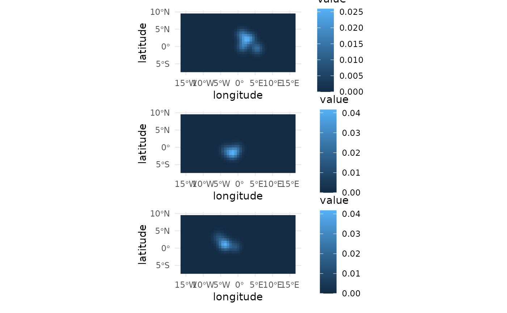
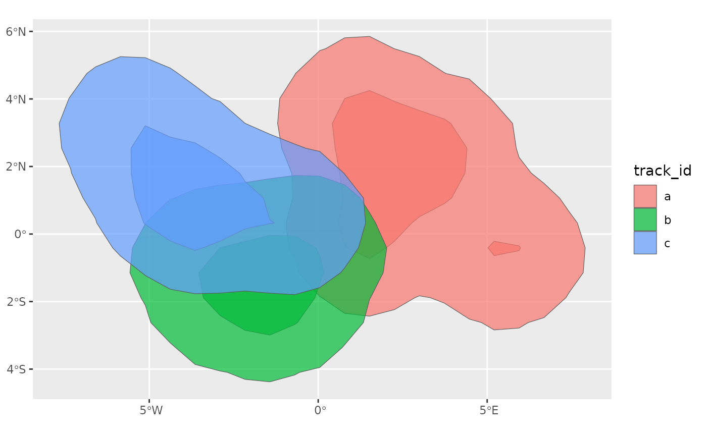

This function estimates the home range of an animal using kernel density
estimation (KDE).
The home range is estimated for each group in x, which can be defined by
grouping x by one or more variables. If x is not grouped, the track ID
is used as grouping variable, and the home range is estimated for each track
separately.
Arguments
- x
A move2 object; if explicitly grouped, the home range is estimated for each group, combining all tracks within each group. Otherwise, the track id is used as grouping variable. Every group must have events, so groupings with empty groups (e.g. from grouping by a factor with unused levels with
.drop = FALSE) give an error.- h
The bandwidth for the kernel density estimation. Either a number, a vector with one value per group, or "h_ref_indiv" for using the reference bandwidth for each individual, or "h_ref_mean" for using the mean bandwidth for all individuals (the default). The reference bandwidth cannot be computed for groups with fewer than two distinct locations: such groups are left out of the mean for "h_ref_mean", and cause an error with "h_ref_indiv".
- bbox
A named vector of four elements (
xmin,ymin,xmax,ymax) defining a grid shared by all groups, or a list of one such vector per group. IfNULL, a shared grid is created from the extent of all points inx, expanded by 100% of the range on each side.- res
The resolution of the grid (in the units of the projection of x). Supply one value for a shared resolution or one value per group when
bboxcontains one grid per group. IfNULL, each grid is assigned a resolution that produces approximately 1000 cells.Per-group values of
h,bboxandresare matched to the groups in the order ofdplyr::group_keys()(i.e. sorted by the grouping variables), not in the order in which the groups appear inx.- levels
A vector of levels for the isopleths (i.e. contour lines), as numbers between 0 and 1. If set to NULL (the default), the full utilisation distribution is returned; otherwise just the isopleths are returned. It is possible to specify more than two levels, e.g.
c(0.5, 0.95)corresponds to the 50% and 95% home ranges.- method
The method used to estimate the UD on the grid:
"binned"(the default), which bins the locations onto the grid before smoothing them, or"exact", which evaluates the kernel of every location at every cell. See Details.
Value
Either a tibble of class hr_tt_ud_tbl, or, if levels is not
NULL, an sf tibble of class hr_tt_poly_tbl (as returned by
hr_tt_ud_iso()), with columns:
the grouping variable (as named in
x; ifxis grouped by multiple variables, this column is namedgroup_id): the ids from the grouping ofxmethod: the method used to estimate the home range ("kde")h: the bandwidth used for the KDExmin,ymin,xmax,ymax: the bounding box used for the KDEres: the resolution used for the KDE Iflevelsis NULL:ud: the full utilisation distribution is returned as a list-column ofterra::SpatRasterobjects Else, iflevelsis not NULL, there is one row per group and level, and the following columns are added:level: the level of the isopletharea: the area of the home range at this level (in the units of the projection ofx, e.g. m^2 for a UTM projection, or in m^2 for unprojected data)geometry: ansfccolumn containing the multipolygons representing the isopleth for the appropriate level
Details
Events with an empty geometry (i.e. no location) are ignored.
The UD is estimated on a grid of cells, with one of two methods:
"exact"evaluates the kernel of every location at the centre of every cell (withMASS::kde2d()), so the time it takes grows with the number of locations times the number of cells."binned"(the default) first bins the locations onto the grid, i.e. splits each location between the four cells whose centres surround it, in proportion to how close it is to each of them (linear binning, as inKernSmooth::bkde2D()), and then smooths the bin counts with the kernel. As the Gaussian kernel is separable, the smoothing is computed as two matrix products, one along each axis of the grid, so the time it takes grows with the number of cells times the number of rows and columns of the grid, whatever the number of locations: it is much faster than the exact method when there are many more locations than rows and columns, and about as fast when there are about as many. Binning moves each location by less than a cell, so the UD is very close to the exact one when the bandwidth spans several cells. The kernel is truncated at 3.4 bandwidths from each location, beyond which it is negligible.
By default, the full UD is returned. If levels is set, the
isopleths for the specified levels are returned instead, along with their
area. This option is useful to reduce memory use, but has the drawback that
the full UD is not returned, which can be useful for some applications (e.g.
to compute overlap between home ranges). If levels is set, the area of the
isopleths is computed using sf::st_area(), which returns the area in the
units of the projection of x (e.g. m^2 for a UTM projection), or in m^2 if
x is unprojected (longitude/latitude). Note, however, that for unprojected
data the kernel is computed in degrees, so the bandwidth and the shape of the
UD are distorted (increasingly so away from the equator); it is recommended
to project x to an appropriate projection before using this function.
Examples
example_kde <- hr_tt_kde(example_tt)
example_kde
#> # A tibble: 3 × 9
#> track_id method h xmin ymin xmax ymax res ud
#> <chr> <chr> <dbl> <dbl> <dbl> <dbl> <dbl> <dbl> <named list>
#> 1 a kde 1.06 -16.5 -7.42 16.6 9.54 0.737 <SpatRstr[,45,1]>
#> 2 b kde 1.06 -16.5 -7.42 16.6 9.54 0.737 <SpatRstr[,45,1]>
#> 3 c kde 1.06 -16.5 -7.42 16.6 9.54 0.737 <SpatRstr[,45,1]>
library(ggplot2)
autoplot(example_kde)

# compute the isopleths for the 50% and 95% home range
example_iso <- hr_tt_kde(example_tt, levels = c(0.5, 0.95))
ggplot(example_iso) +
geom_sf(aes(fill = track_id), alpha = 0.7)

# the same isopleths, evaluating the kernel of every location at every cell
example_iso_exact <- hr_tt_kde(
example_tt,
levels = c(0.5, 0.95),
method = "exact"
)